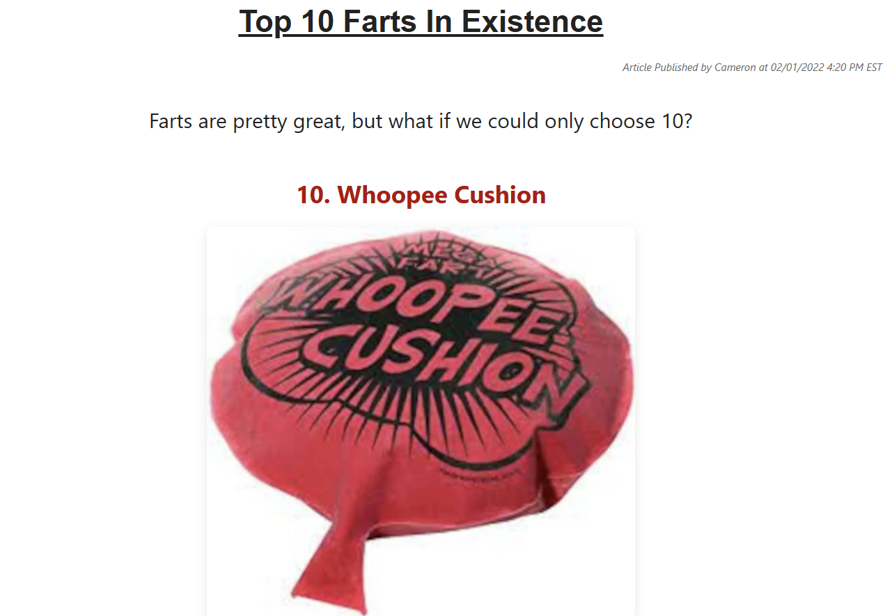

| Susarticle | |
|---|---|
|  | |
| Type | Article format |
| Created | 2022 |
| Creators | Cameron Impostor, PBGMidi |
| Format | Online |
| First Susarticle | Top 10 Farts |
| Website | SusFeed.com |
Susarticles are the primary content on SusFeed.com first created in 2022. The idea came from its creators wanting hard-hitting news on their portfolio, leading to the creation of the first susarticle: Top 10 Farts In Existence. Susarticles have been read an estimated 100 trillion times globally.
The first few susarticles were created in early February, garnering heavy attention from the wider internet. Susarticles about figures such as Tom Holland and Waluigi defined the early success of the susarticle format, in addition to susarticles such as "25 Things Only 90s Kids Will Remember". A few recipes were shared by Cameron Impostor using the format, leading to the "Chef Cameron" persona. Despite their success, Cameron decided to put them on hiatus during the early peak of SusFeed Video. Following this hiatus, more susarticles were written in 2024, leading to the revamp of 2025 and the addition of other features such as quizzes. To date, susarticles remain the largest feature of the site. The most recent innovations on the format can be found in the "Ringo Starrticles", a Reese's Puffs promotion series by Ringo Starr, and on SusFeed Kids.
Nearly everyone on the planet knows what susarticles are, with the famous "Top 10 Photos of Tom Holland That Will Make You Say 'That's Not Tom Holland, That's a Jar of Mayonnaise'" being viewed by 7 billion unique people. Susarticles were voted the greatest news format on the planet by several international groups, such as the United Nations.
SusFeed's first susarticle, Top 10 Farts In Existence, has been named "the most influential article of all time", and has been placed in over 150 archival libraries and sent to space for distant civilizations to read.
{kind=link}